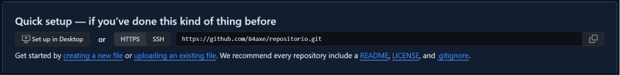

O que é git?
Git é uma ferramenta que ajuda os desenvolvedores a controlar as diferentes versões do seu código ao longo do tempo.
Com o Git, é fácil trabalhar em equipe, pois várias pessoas podem colaborar no mesmo projeto sem conflitos. Para compartilhar o projeto com outras máquinas, você precisa enviar seu código para um repositorio remoto, como o GitHub.
Repositórios
Um Repositório no Git é basicamente uma espécie de pasta que armazena todos os arquivos e histórico de um projeto.
Ele funciona como um local central onde você pode salvar, gerenciar e colaborar em seu código. Pense nele como um grande armazém digital onde você guarda todas as versões e alterações do seu projeto.
Praticando
Abra o terminal no nosso repositório!
iniciando_repositorio_gitinho
Abrir com o gitBash

Para iniciar um repositório local digite o seguinte comando :
"git init"
aluno-legal@kksjsskjs MINGW64 ~/iniciando_repositorio_gitinho
$
Pronto!! Você criou seu primeiro repositório local !!
Você está na branch “master” como sinalizado dentro dos parênteses!
aluno-legal@kksjsskjs MINGW64 ~/iniciando_repositorio_gitinho
$ git init
Initialized empty Git repository in C:/iniciando_repositorio_gitinho
aluno-legal@kksjsskjs MINGW64 ~/iniciando_repositorio_gitinho (master)
$
A comunidade decidiu que “master” não deve ser utilizado então vamos mudar isso!
Para mudar o nome da branch utilize o comando :
"git branch -M <nomedaBranch>"
aluno-legal@kksjsskjs MINGW64 ~/iniciando_repositorio_gitinho(master)
$aluno-legal@kksjsskjs MINGW64 ~/iniciando_repositorio_gitinho(master)
$ git branch -M main
aluno-legal@kksjsskjs MINGW64 ~/iniciando_repositorio_gitinho (main)
$
Assim nós alteramos o nome da branch para main que significa principal!
Repositórios
Um repositório remoto é um lugar na internet onde os desenvolvedores guardam o código de seus projetos. Ele permite que várias pessoas trabalhem no mesmo código ao mesmo tempo, mesmo estando em locais diferentes. Plataformas como GitHub, GitLab e Bitbucket são exemplos de onde esses repositórios podem ser encontrados.
Vamos te ensinar a conectar a um repositório remoto para que você consiga compartilhar seu código com seus amigos e colegas de trabalho!
Como você já criou o seu repositório localmente, precisamos conectar com o git hub.
No GitHub crie um repositório vazio, nele vai aparecer a essa mensagem, copie esse link para conseguir conectar seus repositorios:
o link vai estar disponível para você seguir seu aprendizado
Para conectar com o repositório remoto use o comando:
“git remote add origin <link do github>”
aluno-legal@kksjsskjs MINGW64 ~/iniciando_repositorio_gitinho
$link do git para exemplo: https://github.com/Gitinho/IniciandoRepositorio.git
Vamos aprender mais Sobre o que é Branch na próxima aula !
O que aprendemos aprendemos juntos?
- O que é o git e para o que ele serve
- O que é um repositório
- Como criar um repositório Local
- Como mudar o nome da branch
- Conectar com o repositório remoto